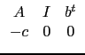
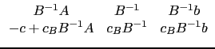
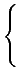
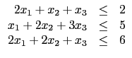

suivant: Deuxième cas: un argument
monter: Programmation linéaire
précédent: Écriture matricielle et algorithme
Table des matières
Index
Lorsqu'on lui passe 3 arguments A, b, c,
la fonction simplex_reduce calcule le maximum (s'il existe)
de c.x pour c vecteur fixé de
 n et x variable,
sous les conditions x 0 et
A.x
n et x variable,
sous les conditions x 0 et
A.x  b (avec A et b 0 fixés).
Ce problème est appelé ``forme canonique''.
b (avec A et b 0 fixés).
Ce problème est appelé ``forme canonique''.
Xcas ajoute m variables d'écart
y1,..., ym (m=nombre de lignes
de A) pour transformer les inégalités en égalités, puis
choisit comme sommet de départ évident
toutes les variables de départ nulles et les variables d'écart
valant b. Il construit donc la matrice

Ensuite il se déplace en suivant des arêtes
du simplexe défini par les conditions
Ax + y = b, x, y 0 en augmentant
le plus possible la valeur de c.x. Cela se fait en cherchant
dans la dernière ligne un coefficient négatif strict (soit le plus
négatif possible, soit le premier négatif), qui représentera
une colonne entrant dans la sous-matrice identité (en rendant son
coefficient non nul dans les composantes du sommet, on augmentera
au sens large la valeur de c.x). S'il n'y a pas de coefficient
négatif, on arrête l'algorithme (on verra que le maximum
est le coefficient en bas à droite de la matrice). S'il existe,
on sélectionne cette colonne, il nous reste à déterminer la
colonne sortant de la matrice identité, c'est-à-dire la ligne
du pivot utilisé :
- tout d'abord la coordonnée positive du sommet
en colonne sortante
va être ramené à 0, et cela doit compenser l'augmentation
de 0 à une valeur positive de la coordonnée en une
colonne entrante, donc dans la colonne entrante, ligne
sortante, le coefficient dans la matrice doit être strictement positif,
- d'autre part les autres coefficients du sommet doivent rester
positifs. Pour réaliser cela, on calcule de la ligne 1 à m
les rapport des coefficients de cette ligne dernière colonne avec
le coefficient de cette ligne, colonne sortante,
en cherchant la ligne qui donne un rapport positif le plus petit
possible.
S'il n'existe pas de telle ligne, le maximum est alors
+
 (car on peut indéfiniment augmenter la valeur de la
composante ayant ce numéro de colonne en restant dans le domaine).
Si une telle ligne existe, on se sert du coefficient
de cette ligne/colonne comme d'un pivot, et on crée un 1 à cette
ligne et des 0 ailleurs dans
cette colonne par combinaisons linéaires de lignes.
(car on peut indéfiniment augmenter la valeur de la
composante ayant ce numéro de colonne en restant dans le domaine).
Si une telle ligne existe, on se sert du coefficient
de cette ligne/colonne comme d'un pivot, et on crée un 1 à cette
ligne et des 0 ailleurs dans
cette colonne par combinaisons linéaires de lignes.
Au cours de l'algorithme, les m premières lignes de la matrice contiennent
toujours une sous-matrice identité m, m (puisqu'on fait du pivot de Gauss),
et les coefficients de la dernière
ligne qui correspondent à cette sous-matrice identité sont nuls
(pour la même raison).
On a donc une matrice de la forme


où B est une sous-matrice extraite de A, I (correspondant à des
colonnes de la dernière ligne ayant pour coefficients 0) et cB est
la liste des coefficients de c correspondant aux mêmes colonnes de
A, I que B.
Pour éviter de boucler indéfiniment si le coefficient en bas
à droite est constant, on peut garder en
mémoire dans une table
les colonnes correspondant à l'identité et se refuser
à revenir à une configuration précédente.
Si on ne quitte pas l'algorithme (maximum=+ ), à la fin,
la dernière ligne ne contient que des coefficients positifs ou
nuls. On a de plus l'identité fonction à optimiser + produit
scalaire entre la dernière ligne et (x, y) est égal
au coefficient en bas à droite (=
cBB-1b). Comme les
coefficients de la dernière ligne sont positifs ou nuls, de même
que les composantes de x et y, on en déduit que la fonction
à optimiser est inférieure au coefficient en bas à droite.
D'autre part, cette valeur est atteinte au sommet correspondant.
Le résultat renvoyé par simplex_reduce
est une séquence composée de la valeur du maximum, d'une solution
augmentée (les premières composantes sont celles de la solution,
les composantes suivantes celles des variables ajoutées
artificiellement pour transformer Ax b en une égalité)
et de la matrice de l'algorithme du simplexe après réduction.
Exemple : si on cherche le maximum de
3x1 + x2 +3x3 sous les
conditions
x1, x2, x3 0 et

on prend A:=[[2,1,1],[1,2,3],[2,2,1]],
b:=[2,5,6] et c:=[3,1,3], donc on tape :
simplex_reduce([[2,1,1],[1,2,3],[2,2,1]],[2,5,6],[3,1,3]
et on obtient 27/5 comme maximum,
[1/5,0,8/5,0,0,4] comme solution augmentée (donc
[1/5,0,8/5] est solution), ainsi que la matrice réduite.
suivant: Deuxième cas: un argument
monter: Programmation linéaire
précédent: Écriture matricielle et algorithme
Table des matières
Index
Documentation de giac écrite par Renée De Graeve